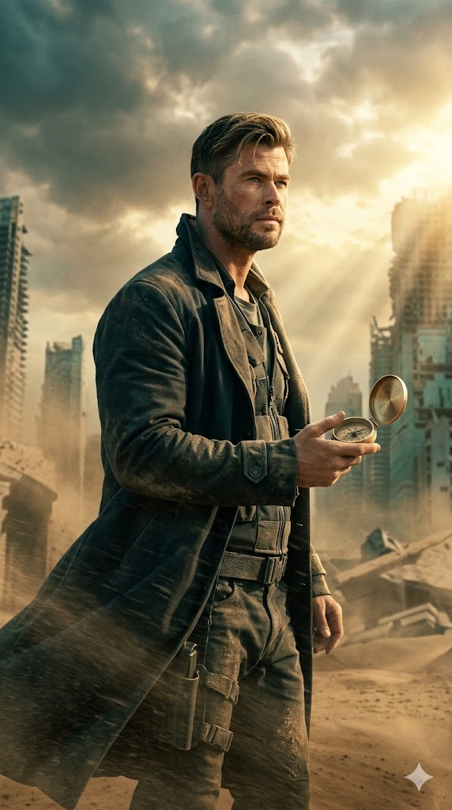
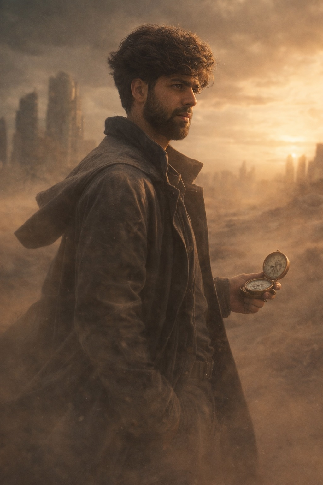

"How to Create an Ultra-Photorealistic Sci-Fi Time Traveler Portrait in a Sandstorm" | Brainloom
Generate a cinematic, ultra-photorealistic portrait of yourself as a time traveler standing in a futuristic ruin engulfed by a sandstorm. This prompt delivers 8K quality, natural skin texture, and exact facial identity with no stylization or beautification.
Generated Images


Prompt Explanation
The Prompt
Ultra-high-end cinematic sci-fi portrait, vertical 9:16 aspect ratio, live-action film still, ultra-photorealistic, 8K resolution, full-frame cinema camera aesthetic with natural 85mm lens compression and shallow depth of field; me with exact same facial and physical identity from the uploaded image as a time traveler standing in the ruins of a futuristic city engulfed in a powerful sandstorm, framed from mid-thigh up, body angled 25–35 degrees away from camera for dynamic composition, weight shifted subtly to one leg, shoulders naturally tilted by wind pressure, long coat flowing sideways from strong desert wind, head turned slightly toward the distant horizon with a mature, reflective, quietly determined expression; use the exact original face from the provided photo without altering facial structure, identity, bone structure, skin tone, eye shape, pores, or proportions — preserve natural skin texture and imperfections, no beautification, no stylization, no face modification; in his hand he holds an open foldable pocket compass of realistic size (approximately palm-sized), classic hinged design made of brushed champagne-gold metal with subtle wear and fine engraved directional markings, glass slightly dusty but intact, the compass face angled toward him (not toward camera), no glow, no digital elements, purely mechanical and grounded; wardrobe consists of a long dark coat with subtle futuristic tailoring and layered urban survival clothing beneath, lightly dust-covered fabric reacting naturally to wind; environment shows a devastated futuristic skyline partially buried in sand, collapsed skyscrapers fading into a dusty atmosphere, debris silhouettes barely visible through airborne particles; no rain, only dense wind-driven sandstorm with fine dust swirling dynamically across the frame; lighting features warm golden sunlight breaking dramatically through storm clouds behind him, creating strong rim light outlining his silhouette, volumetric light rays cutting through airborne sand, balanced cool shadows for depth, cinematic teal-tinted shadows and warm highlights while preserving accurate natural skin tones, high dynamic range with a filmic contrast curve, emotionally hopeful redemption tone inspired by grounded sci-fi realism such as Blade Runner 2049 and Children of Men, no cartoon, no anime, no illustration style, no painterly effect, no plastic skin, no face alteration, no glowing eyes, no fantasy armor, no superhero stance, no neon oversaturation, no extreme lens flare, no blurred face, no duplicate person, no extra limbs, no bad anatomy, no watermark, no logo, no text, no typography.
How to Use This Prompt
This is an advanced, highly detailed prompt that requires careful attention to achieve its ambitious vision. Start by uploading the clearest, most natural reference photo of your face you have—ideally one with neutral expression and even lighting that shows your natural skin texture. Copy the image link and paste it at the very beginning of your prompt field. Then add the complete prompt text. This prompt contains multiple layers of instruction: technical specifications (8K, 85mm lens, shallow depth of field), compositional details (body angle, wind effects, expression), identity preservation (exact face, no alterations, natural texture), prop description (the vintage compass), environmental setting (sandstorm, ruined city), lighting direction (golden rim light, teal shadows), and a long list of negative instructions (what NOT to do). When you run the first generation, check each element systematically. First and most importantly: is your face exactly right—same bone structure, skin texture, imperfections? If not, the prompt needs stronger identity emphasis. Then check the compass—is it mechanical, champagne-gold, angled toward you? Then the coat and wind effects, then the sandstorm and city ruins, then the lighting. This is too complex to perfect in one generation. Use the closest result and generate variations, or use it as a new reference image. You may need to break this into stages: first get the figure and environment right, then refine the compass and lighting. The --ar 9:16 is already included. Run multiple iterations, adjusting one element at a time, until every detail meets the brief.
Why This Prompt Works
This prompt is a masterclass in controlling AI image generation because it leaves nothing to chance. Every visual element is specified with precision, creating a unified and achievable vision. The opening establishes the quality standard: 'Ultra-high-end cinematic sci-fi portrait, vertical 9:16, live-action film still, ultra-photorealistic, 8K resolution.' This tells the AI we're aiming for the absolute pinnacle of image quality—not just a picture, but something that could be a frame from a major motion picture. The camera specification—'full-frame cinema camera aesthetic with natural 85mm lens compression and shallow depth of field'—is technically precise. An 85mm lens on full-frame creates flattering portraits with natural perspective and beautiful background separation. The AI understands this language and will render accordingly. The identity instruction is the most detailed and emphatic in this entire series: 'use the exact original face from the provided photo without altering facial structure, identity, bone structure, skin tone, eye shape, pores, or proportions — preserve natural skin texture and imperfections, no beautification, no stylization, no face modification.' This isn't just a request—it's a comprehensive specification that anticipates and blocks every way AI might alter your face. By listing specific elements (pores, bone structure) and explicitly forbidding beautification and stylization, you're telling the AI that authenticity is non-negotiable. The pose description is remarkably precise: 'framed from mid-thigh up, body angled 25–35 degrees away from camera, weight shifted subtly to one leg, shoulders naturally tilted by wind pressure.' These aren't vague directions—they're specific enough to create a consistent, natural pose across generations. The compass description is equally detailed: 'open foldable pocket compass of realistic size, classic hinged design, brushed champagne-gold metal with subtle wear, fine engraved markings, glass slightly dusty but intact, angled toward him, no glow, no digital elements.' This ensures the prop looks like a real object, not a fantasy artifact. The lighting instruction—'warm golden sunlight breaking through storm clouds behind him, creating strong rim light, volumetric light rays, balanced cool shadows, teal-tinted shadows and warm highlights'—creates a specific, cinematic look inspired by films like Blade Runner 2049. Finally, the extensive negative list blocks every common AI failure mode: no cartoon, no plastic skin, no glowing eyes, no bad anatomy. This prompt works because it's a complete creative brief, leaving the AI with clear direction and no room for misinterpretation.
Prompt Variations
- {'variation': "Change the setting to 'abandoned spaceport at dawn with derelict spacecraft half-buried in red desert sand' and keep the time traveler concept. This variation shifts the environment while maintaining the grounded sci-fi aesthetic and emotional tone."}
- {'variation': "Modify the prop to 'a vintage pocket watch with exposed gears, stopped at a specific time, brass with patina' and adjust the lighting to 'cool blue hour light with distant city glow.' This variation emphasizes the 'time' theme differently while keeping the mechanical, grounded quality."}
- {'variation': "Replace the sandstorm with 'thick fog rolling through a decaying megastructure, moisture in the air catching light' and change the mood to 'quiet contemplation, the calm after catastrophe.' This variation explores a different atmospheric condition while maintaining the cinematic realism."}
Frequently Asked Questions
-
How do I ensure my face remains exactly the same with all these effects?The prompt includes extremely detailed identity preservation language. If your face still isn't perfect, try adding 'reference image is the sole source for facial features, do not combine with other faces' and emphasize 'exact match required.' You can also use the closest image as a new reference and regenerate with stronger identity instructions.
-
What does 'teal-tinted shadows and warm highlights' achieve?This is a classic cinematic color grading technique called orange-and-teal. Warm highlights (on skin, rim light) contrast with cool shadows (in the environment, shaded areas), creating visual depth and emotional complexity. It makes the image feel like a professional film still.
-
Why so many negative instructions (no cartoon, no plastic skin, etc.)?AI generators have default tendencies—they often smooth skin, add fantasy elements, or drift toward illustration styles. The negative instructions explicitly block these defaults, forcing the AI to stay in the ultra-realistic, grounded space this prompt requires. They're essential guardrails.
Related Prompts

Ai Prompt Man In Black Suit With Fans And Paparazzi
Create a bold AI image of a man in black sunglasses and a sharp suit, standing in the middle of flashing cameras and ...
View Prompt
How To Create A Cinematic Hybrid Real Life Anime Scene Prompt
Generate a stunning top-down group shot that blends a real human subject with anime-style characters, matching a spec...
View Prompt
Modern Graphic Design Portrait Poster Red Teal Outlines
Stylized black-and-white poster portrait that keeps your exact face, hair, and sunglasses. Features bold red outlines...
View Prompt
Backlit Silhouette Portrait Ai Prompt Headphones
This prompt generates a dramatic backlit silhouette portrait with over-ear headphones. Shot from behind with a 50mm f...
View Prompt
How To Create A Dramatic Low Angle Fashion Photoshoot With 14mm Lens
Create a bold ultra-wide fashion image with dramatic forced perspective, strong studio lighting, and branded styling ...
View Prompt
17 Scale Figurine Realistic Style Ai Prompt For Collectors
Generate high-quality AI renders with this prompt that creates a 1/7 scale commercialized figurine of any chosen char...
View Prompt